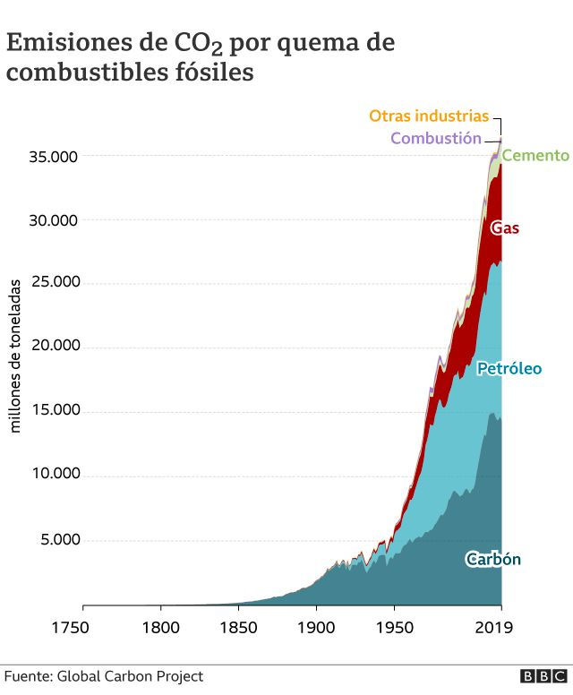

Nuestra misión es preservar e incentivar el cuidado de nuestra querida VGB de los malechores que la quieren ensuciar
La Revolución Industrial y sus consecuencias han sido un desastre para la raza humana, permitieron el trabajo en cadenas de montaje y la fabricación en masa de numerosos productos. Antes de este hito histórico que surgió en Inglaterra, era una práctica habitual el re-empleo de diversas piezas y materiales, porque las cadenas de montaje no estaban estandarizadas y la producción era mucho menor.
Con la llegada de las máquinas todo cambió. Ahora si un producto se rompe, sale más barato y resultaba más sencillo comprar un producto nuevo en lugar de buscar la pieza que faltaba para poder repararlo. Con la expansión de la Revolución Industrial a las principales potencias del mundo la producción en cadena se impulsó enormemente, relegando al reciclaje a un discretísimo segundo plano. Siendo este el mayor causante de la contaminacion de hoy en día.
Con la llegada de la primera revolucion industrial (1760-1850) no hubo tanto cambio en cuanto la contaminacion, pero todo cambió a partir de la segunda revolucion industrial (1850-1914) donde todos los indices se dispararon enormemente. La primera comenzó en el Reino Unido y se extendió por Europa y Estados Unidos. La introducción de la máquina de vapor y otras tecnologías permitió la mecanización de algunos procesos productivos. Esto llevó a la aparición de la fábrica urbana como espacio de trabajo y una nueva organización laboral.
La Segunda Revolución Industrial se caracterizó por el aumento de la productividad industrial a partir de la introducción de la cadena de montaje (separación del proceso productivo en diferentes etapas) y nuevas fuentes de energía. En esta segunda etapa, Alemania protagonizó el mayor crecimiento económico, y las transformaciones se extendieron a Estados Unidos y Japón.
